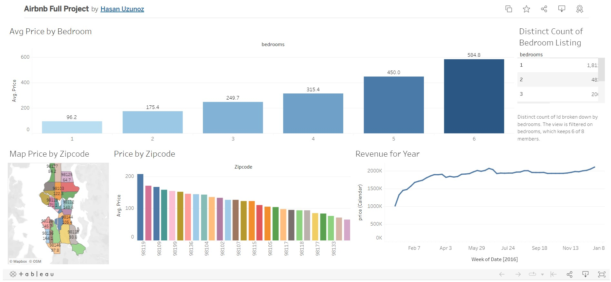
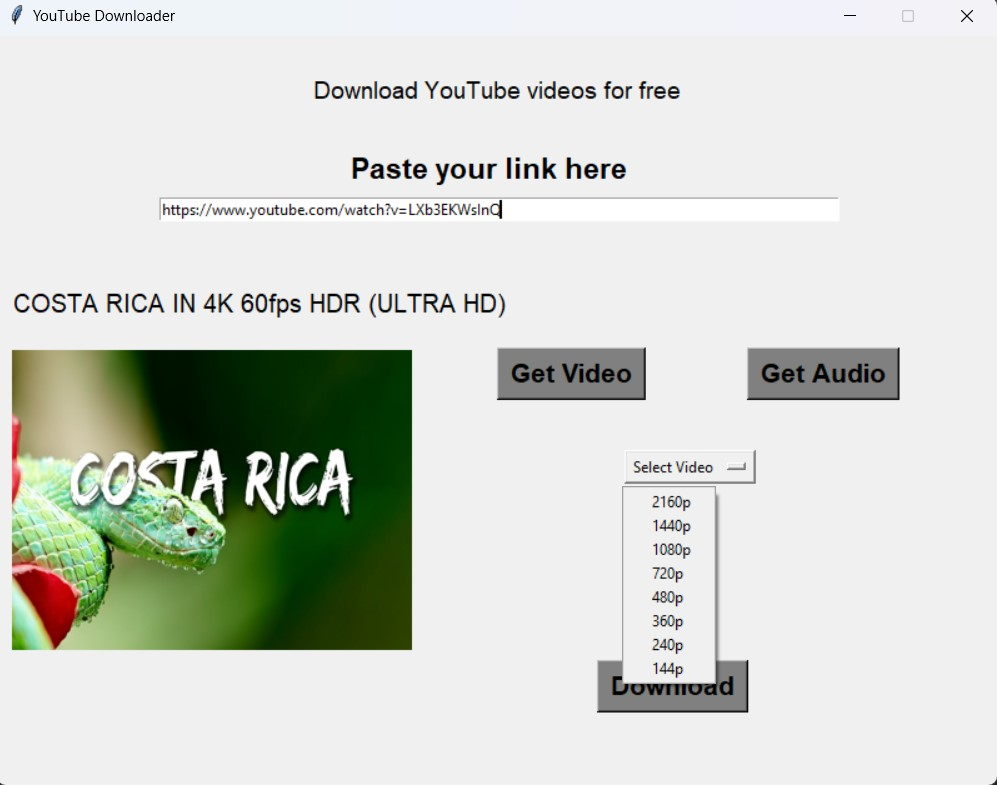
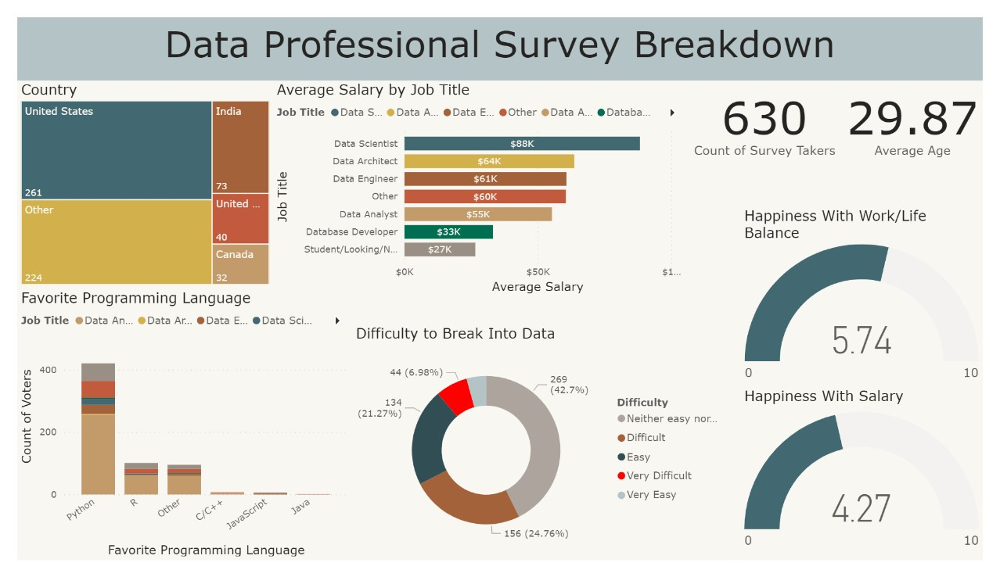

This project demonstrates the process of cleaning and formatting raw Nashville housing data using SQL Server.
It involves handling missing values, removing duplicates, correcting inconsistent data, and transforming data types.
The result is a clean, well-structured dataset ready for in-depth analysis or modeling.
Analyzing and visualizing data related to COVID-19 cases, deaths, and vaccinations across different locations and time periods. The goal of the project is to uncover patterns and insights that can help understand the spread and impact of the pandemic. This could include looking at case rates in relation to population size, the percentage of population infected, or the likelihood of death if infected.

Here you can find some of the dashboards that I have created using Tableau.
This project is a demonstration of how to use Excel to clean and analyze data, and create a dashboard to visualize the results. The project uses a dataset of bike sales data from a fictional company, and shows how to apply various Excel features such as pivot tables, formulas, XLOOKUP, conditional formatting, and charts.

The YouTube Video Downloader is a versatile and user-friendly application built in Python with the Tkinter and Pytube library. This program allows users to download YouTube videos effortlessly

This project is a dashboard that explores the data science industry based on a survey of data professionals. The dashboard displays the demographics, roles, education, and experience of data professionals across different countries, as well as their salary, work-life balance, and job satisfaction levels.